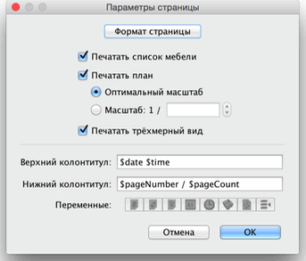
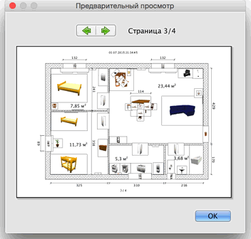

| Печать плана | |||
Для печати плана следует выбрать Файл > Печать.... Sweet Home 3D печатает список фурнитуры, план и вид 3D, используя бумагу, ориентацию страницы и отступы, назначенные по умолчанию.  В настройках страницы Вы можете изменить размер страницы и ориентацию, кликнув на кнопку Формат страницы. Вы можете выбрать возможность печати списка фурнитуры, плана и вида 3D. Для предпросмотра печати, выберите Файл > Предпросмотр....  В панели предпросмотра, Вы увидите, как будет выглядеть страница на печати. Для смены предпросмотра страницы, кликните на стрелки слева или нажмите стрелки на клавиатуре. |
|